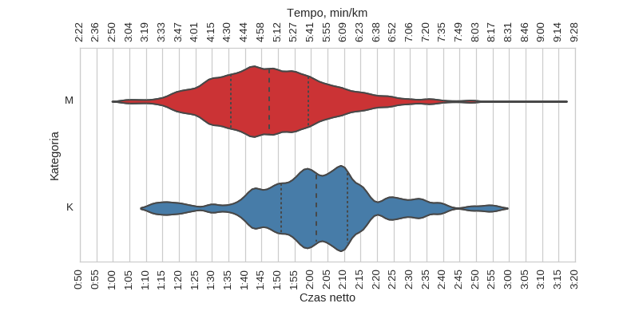
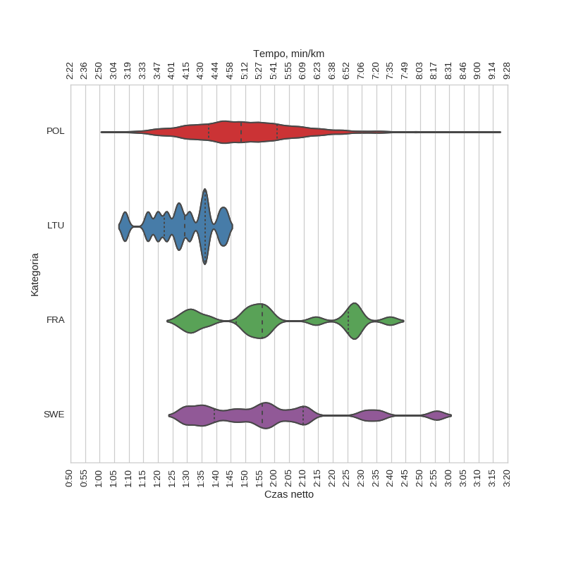

2 Carrefour Półmaraton Warszawski (2007)
Histogramy
Klasyfikacja generalna
|
mean |
std |
min |
25% |
50% |
75% |
max |
| czas |
1:49:43 |
0:18:42 |
1:03:22 |
1:36:55 |
1:48:26 |
2:00:47 |
3:13:48 |
kobiety
|
mean |
std |
min |
25% |
50% |
75% |
max |
| czas |
2:01:43 |
0:19:08 |
1:12:14 |
1:51:01 |
2:01:41 |
2:11:02 |
2:55:37 |
mężczyźni
|
mean |
std |
min |
25% |
50% |
75% |
max |
| czas |
1:48:30 |
0:18:13 |
1:03:22 |
1:35:48 |
1:47:20 |
1:59:13 |
3:13:48 |
Wykresy rybkowe
wg płci

|
czas |
count |
|
mean |
std |
min |
25% |
50% |
75% |
max |
|
| plec |
|
|
|
|
|
|
|
|
| K |
2:01:43 |
0:19:08 |
1:12:14 |
1:51:01 |
2:01:41 |
2:11:02 |
2:55:37 |
148 |
| M |
1:48:30 |
0:18:13 |
1:03:22 |
1:35:48 |
1:47:20 |
1:59:13 |
3:13:48 |
1458 |
wg kategorii
|
czas |
count |
|
mean |
std |
min |
25% |
50% |
75% |
max |
|
| kat |
|
|
|
|
|
|
|
|
| K20 |
1:48:23 |
0:19:23 |
1:03:22 |
1:35:28 |
1:47:55 |
2:00:20 |
2:48:04 |
367 |
| K30 |
1:49:49 |
0:18:14 |
1:05:07 |
1:36:54 |
1:49:33 |
2:01:07 |
2:59:46 |
652 |
| K40 |
1:47:52 |
0:16:26 |
1:09:18 |
1:36:22 |
1:46:57 |
1:57:30 |
2:48:59 |
342 |
| K50 |
1:50:36 |
0:19:26 |
1:18:12 |
1:36:52 |
1:45:55 |
2:01:30 |
3:13:48 |
183 |
| K60 |
2:02:25 |
0:21:47 |
1:28:55 |
1:46:10 |
1:59:13 |
2:15:27 |
2:49:11 |
51 |
| K70+ |
2:15:10 |
0:23:56 |
1:54:26 |
2:00:54 |
2:09:09 |
2:13:53 |
3:09:19 |
9 |
wg krajów

|
czas |
count |
|
mean |
std |
min |
25% |
50% |
75% |
max |
|
| kraj |
|
|
|
|
|
|
|
|
| FRA |
2:00:06 |
0:22:39 |
1:27:37 |
1:46:45 |
1:55:45 |
2:25:17 |
2:39:38 |
20 |
| LTU |
1:28:47 |
0:10:27 |
1:08:37 |
1:22:12 |
1:29:18 |
1:36:16 |
1:43:19 |
12 |
| POL |
1:49:49 |
0:18:22 |
1:04:05 |
1:37:21 |
1:48:29 |
2:00:50 |
3:13:48 |
1509 |
| SWE |
1:58:38 |
0:24:22 |
1:28:33 |
1:39:22 |
1:55:50 |
2:09:49 |
2:55:37 |
17 |